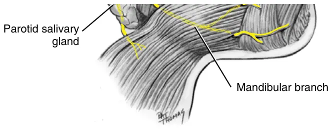

نسخه استخراجشده؛ ترجمه یا تأیید علمی انجام نشده است. وضعیت: captured
برای خانمی ریزجثه که دهانش کم باز میشود بلاک واَزیرانی-آکینوسی زدهای و سوزن بلند را تقریباً تا ته فرو بردهای. دو دقیقه بعد میگوید چشم چپش بسته نمیشود و گوشهی لبش افتاده است، ولی لب و زبانش هنوز بیحس نشده. چه رخ داده است؟

عصب صورتی (زوج هفتم) عصب حرکتی عضلات حالت چهره است. شاخههای انتهاییاش از درون غدهی پاروتید میگذرند که پشت لبهی خلفی راموس، میان عضلهی پتریگوئید داخلی و ماستر، قرار دارد. اگر دارو درون کپسول پاروتید بریزد، این شاخهها از کار میافتند.
فلج گذرا فقط حرکتی است و بیحسی حسی کم است یا اصلاً نیست. مدتش به نوع و حجم دارو بستگی دارد و برابر بیحسی بافت نرم همان دارو است، یعنی چند ساعت. افتادن لب بالا پس از بلاک اینفرااوربیتال یا اینفیلتراسیون کانین بالا هم از همین جنس است: دارو به چند شاخهی انتهایی رسیده است.
مشکل اصلی ظاهری است: صورت یکطرفه کج دیده میشود. مشکل دوم چشم است: بیمار نمیتواند پلک همان سمت را ارادی ببندد و پلک زدن محافظ از بین میرود. ولی قرنیه هنوز حس دارد؛ اگر تحریک شود، رفلکس قرنیهای و اشک سر جایشان هستند.
نکتهی طلایی: فلج صورتی درمانی جز صبر ندارد. کار تو حفظ چشم و آرام کردن بیمار است؛ او باید پیش از رفتن بداند که حرکت صورتش همراه با رفتن بیحسی برمیگردد.